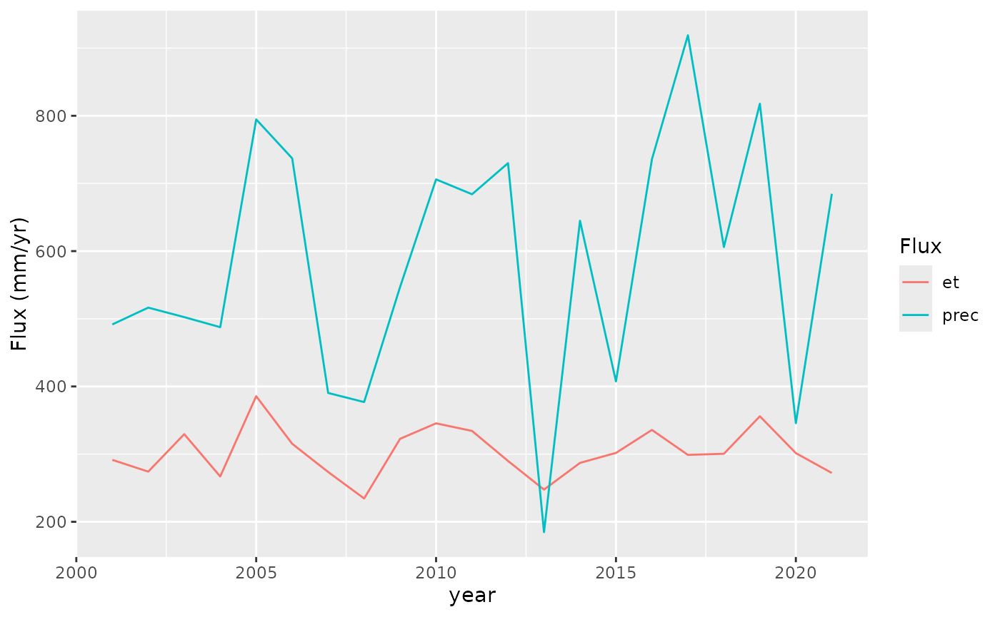
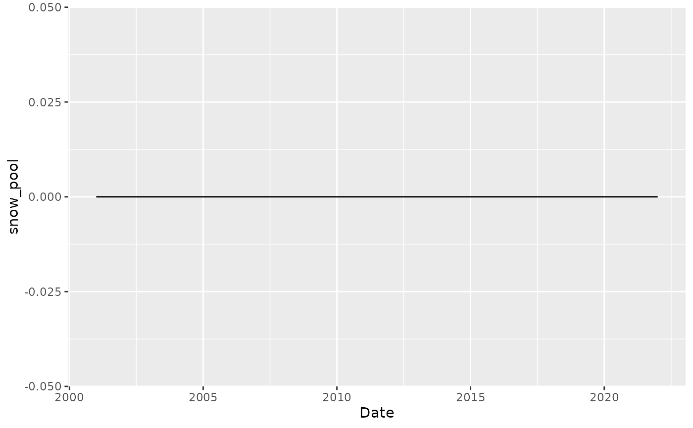
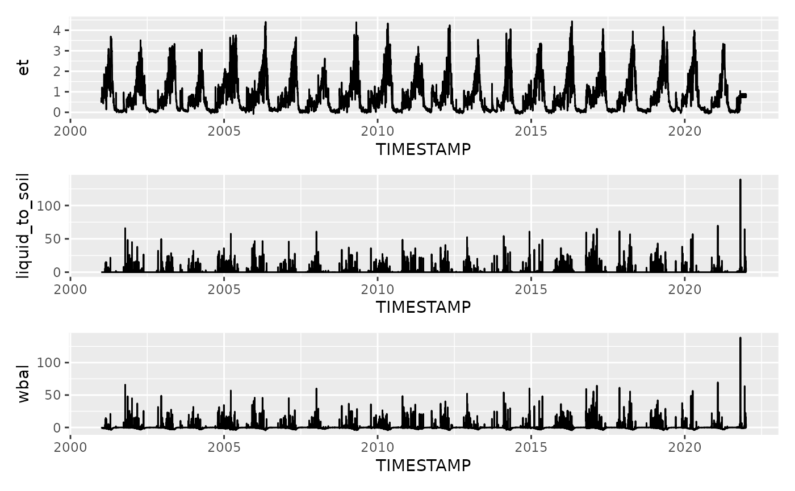
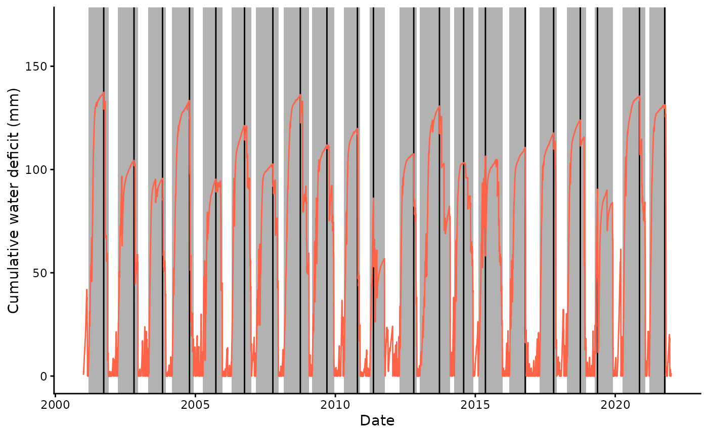
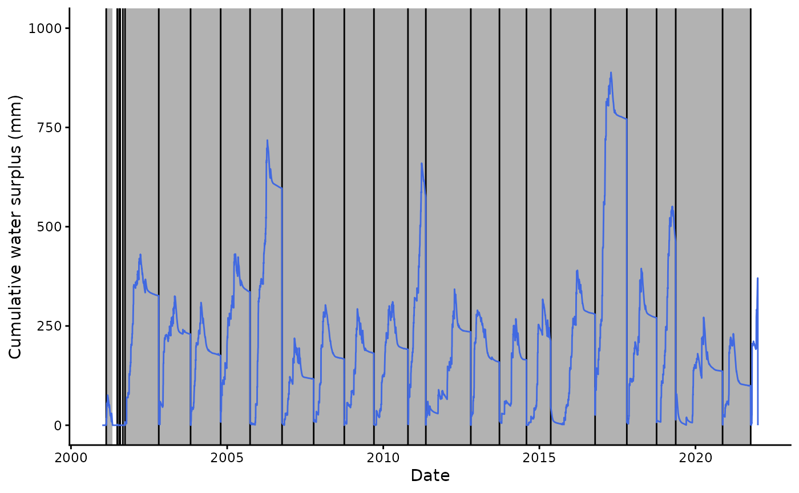
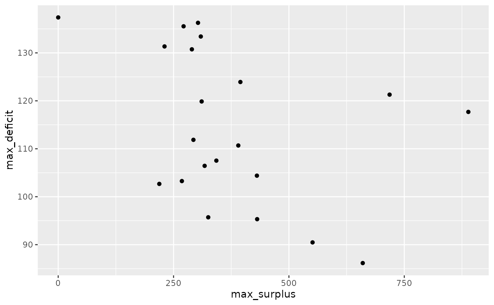

Cumulative water deficit and surplus example
Beni Stocker
2026-07-29
Source:vignettes/cumulative_surplus_example.Rmd
cumulative_surplus_example.RmdThis demonstrates the workflow for determining cumulative water deficit (CWD) time series and fitting an extreme value distribution to annual maxima of the CWD time series.
Convert ET to mass units
Convert latent heat flux (W/m2) to evapotranspiration in mass units (mm/d).
# tested: identical results are obtained with:
# bigleaf::LE.to.ET(LE_F_MDS, TA_F_MDS)* 60 * 60 * 24
le_to_et <- function(le, tc, patm){
1000 * 60 * 60 * 24 * le / (cwd::calc_enthalpy_vap(tc) * cwd::calc_density_h2o(tc, patm))
}
df <- df |>
mutate(et = le_to_et(LE_F_MDS, TA_F_MDS, PA_F))Check annual totals.
adf <- df |>
mutate(year = year(TIMESTAMP)) |>
group_by(year) |>
summarise(et = sum(et), prec = sum(P_F))
adf |>
tidyr::pivot_longer(cols = c(et, prec), names_to = "Flux") |>
ggplot(aes(x = year, y = value, color = Flux)) +
geom_line() +
labs(y = "Flux (mm/yr)")
Each year, the annual precipitation is greater than ET. Hence, the water deficit will not continue accumulating over multiple years.
Simulate snow
Simulate snow accumulation and melt based on temperature and precipitation.
df <- df |>
mutate(prec = ifelse(TA_F_MDS < 0, 0, P_F),
snow = ifelse(TA_F_MDS < 0, P_F, 0)) |>
cwd::simulate_snow(varnam_prec = "prec", varnam_snow = "snow", varnam_temp = "TA_F_MDS")Visualise snow mass equivalent time series.
df |>
ggplot(aes(TIMESTAMP, snow_pool)) +
geom_line() +
labs(x = "Date", x = "Snow mass equivalent (mm)")
This looks like it’s a lot of snow, actually. Maybe the melting rate is too slow.
Define the daily water balance as liquid water infiltrating into soil (taken as rain plus snow melt) minus evapotranspiration - both in mass units, or equivalently in mm/d.
df <- df |>
mutate(wbal = liquid_to_soil - et)Visualise it.
gg5 <- df |>
ggplot(aes(TIMESTAMP, et)) +
geom_line()
gg6 <- df |>
ggplot(aes(TIMESTAMP, liquid_to_soil)) +
geom_line()
gg7 <- df |>
ggplot(aes(TIMESTAMP, wbal)) +
geom_line()
gg5 / gg6 / gg7
Cumulative water deficit algorithm
Get CWD and events.
out_cwd <- cwd(
df,
varname_wbal = "wbal",
varname_date = "TIMESTAMP",
thresh_drop = 0.0,
do_surplus = TRUE
)Some preparations
# get list of largest annual deficit events
inst_ann <- out_cwd$inst |>
mutate(year = lubridate::year(date_start)) |>
group_by(year) |>
filter(max_deficit == max(max_deficit, na.rm = TRUE)) |>
ungroup()
# add date of maximum defict and surplus
inst_ann <- inst_ann |>
mutate(date_max_deficit = out_cwd$df$TIMESTAMP[inst_ann$idx_max_deficit])Plot cumulative water deficit and surplus time series.
ggplot() +
geom_rect(
data = inst_ann,
aes(xmin = date_start, xmax = date_end, ymin = -99, ymax = 99999),
fill = rgb(0,0,0,0.3),
color = NA) +
geom_vline(xintercept = inst_ann$date_max_deficit) +
geom_line(data = out_cwd$df, aes(TIMESTAMP, deficit), color = "tomato") +
coord_cartesian(ylim = c(0, 170)) +
theme_classic() +
labs(x = "Date", y = "Cumulative water deficit (mm)")
ggplot() +
geom_rect(
data = out_cwd$inst_surplus,
aes(xmin = date_start, xmax = date_end, ymin = -99, ymax = 99999),
fill = rgb(0,0,0,0.3),
color = NA) +
geom_vline(xintercept = out_cwd$inst_surplus$date_start) +
geom_line(data = out_cwd$df, aes(TIMESTAMP, surplus), color = "royalblue") +
coord_cartesian(ylim = c(0, 1000)) +
theme_classic() +
labs(x = "Date", y = "Cumulative water surplus (mm)")
Match annual maximum deficits with preceding annual maximum surpluses.
out_cwd$inst_surplus <- out_cwd$inst_surplus |>
mutate(date_max_surplus = out_cwd$df$TIMESTAMP[out_cwd$inst_surplus$idx_max_surplus])
# merge the two data frames so that the date in inst_ann is aligned with the next
# earlier date in out_cwd$inst_surplus
df_inst_combined <- inst_ann %>%
left_join(
out_cwd$inst_surplus %>%
select(date_max_surplus, max_surplus) |>
rename(date_max_preceding_surplus = date_max_surplus),
join_by(date_max_deficit >= date_max_preceding_surplus)
) %>%
group_by(date_max_deficit) %>%
slice_max(date_max_preceding_surplus, n = 1, with_ties = FALSE) %>%
ungroup()Are the magnitudes of deficits and preceding surpluses correlated?
df_inst_combined |>
ggplot(aes(max_surplus, max_deficit)) +
geom_point()
No.